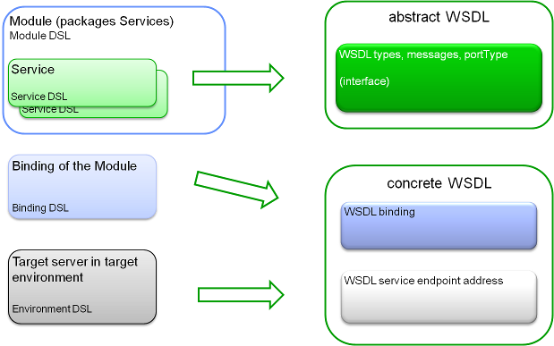

In general, all code generators use Xtend2 and can be executed with the MWE2, the new Modeling Workflow Engine,
that comes with Xtext. Code generation is usually done in three steps that should be defined in your workflow:
1. A model reader. Use the read that comes with Xtext
1. Optionally, but recommended a DirectoryCleaner (comes with MWE)
1. A GeneratorComponent having the generator setup of the respective generator registered
The reader must be configured with the DSL setups, to be able to parse and build the models. The is put into a
so called “slot”. As a prototype to your reader configuration you can use this:
Example:
component = org.eclipse.xtext.mwe.Reader {
path = modelPath
register = org.fornax.soa.ServiceDslStandaloneSetup {}
register = org.fornax.soa.SemanticsDslStandaloneSetup {}
register = org.fornax.soa.BusinessDslStandaloneSetup {}
register = org.fornax.soa.BindingDslStandaloneSetup {}
register = org.fornax.soa.EnvironmentDslStandaloneSetup {}
register = org.fornax.soa.SLADslStandaloneSetup {}
register = org.fornax.soa.basedsl.SOABaseDslStandaloneSetup {}
register = org.fornax.soa.profiledsl.SOAProfileDslStandaloneSetup {}
register = org.fornax.soa.moduledsl.ModuleDslStandaloneSetup {}
loadResource = {
slot = 'model'
}
}
You can generate WSDLs and XSDs from service and type definitions for Binding. This binding also references
a target environment to generate the contracts for. The generator can be configured to generate for ModuleBindings,
DomainBinding, DomainNamespaces, InternalNamespaces or any SubNamespace by providing a list of names of the
bindings or namespaces. You can use Java regular expressions here. For an example see this:
Example:
component = org.eclipse.xtext.generator.GeneratorComponent {
register = org.fornax.soa.bindingdsl.generator.DefaultBindingContractGeneratorSetup {
moduleBindingName = 'com\\.example\\.salesmodulebinding'
moduleBindingName = 'com\\.example\\.billing\\.*'
serviceModule = {
name = 'com.example.partner'
version = '1.0.1'
generateUsedServices = true
generateProvidedServices = false
}
domainNamespace = 'de\\.countandcare\\.product.*'
internalNamespace = 'com.example.technical.internal.*'
namespace = 'com\\.example\\.anysubnamespace.*'
/*generate for all dependencies*/
noDependencies = false
/*use the rules for lifecycle definition etc. defined in profile ExSOAArchitectureProfile*/
profileName = 'ExSOAArchitectureProfile'
targetEnvironmentName = 'Prod'
}
slot = 'model'
outlet = {
path = "${resSrcGenPath}/contracts"
}
}
The generator will generate WSDLs and their imported XSDs for the given names of ModuleBindings. Further,
WSDLs and their imported XSDs for all services used by module com.example.partner version 1.0.1 will be generated.
Finally all XSDs for all DomainNamespaces matching the regular expression "de\\.countandcare\\.product.*", InternalNamespaces
matching com.example.technical.internal.* and any SubNamespace matching "com\\.example\\.anysubnamespace.*"
are generated. Everything is generated for the Prod environment.
The generator is configured using the ISetup implementation org.fornax.soa.bindingdsl.generator.DefaultBindingContractGeneratorSetup.
DefaultBindingContractGeneratorSetup supports the following configuration parameters:
| Parameter name | Type | Cardinality | Default | Description |
|---|---|---|---|---|
| moduleBindingName | String | 0..* | Generate service contracts for any e[ModuleBinding] whose name matches the given regular expression and binds to the given targetNamespace. ModuleBindings bind a Module to an Environment. | |
| serviceModule | VersionedServiceModuleSelector | 0..* | Generate service contracts for any service used or provided by the module. The generator looks up a Binding that provides the service and matches the version constraints and endpoint qualifiers if defined in the usage reference. | |
| domainNamespace | String | 0..* | Generate XSDs for a ServiceDSL domain-namespace whose name matches the given regular expression. |
|
| internalNamespace | String | 0..* | Generate XSDs for a ServiceDSL internal-namespace whose name matches the given regular expression. |
|
| namespace | String | 0..* | Generate XSDs for a SubNamespace whose name matches the given regular expression. | |
| noDependecies | boolean | 0..1 | false | Also generate artefacts imported by generated artefacts? If true, no imported artefacts are generated |
| profileName | String | 0..1 | The name of the architecture profile, that defines the architectural rules to be applied on generation. If not set, the default profile as defined in the model, or the profile specifically declared on a subnamespace will be used. | |
| targetEnvironmentName | String | 1..1 | The of the Environment to generate for. Bindings and used Modules Bindings are filtered by their targeted Environment, only selecting Bindings that bind to an Environment with the given targetEnvironmentName. For namespace generated XSDs will contain latest version of VersionedTypes that are supported in the given Environment as defined by the lifecycle state model. | |
| useRegistryBasedFilePaths | boolean | 0..1 | false | Whether imported artefacts in generated contracts shall be resolved using absolute paths based on the location of the service registry. If true, absolute paths will be used. Otherwise relative paths will be used for location URLs such as XSD import location URLs |
| Parameter name | Type | Cardinality | Default | Description |
|---|---|---|---|---|
| name | String | 1..1 | The module name to generate assets for | |
| version | String | 1..1 | The module version to generate assets for | |
| selectTypeVersionsByEnvironment | String | 0..1 | If you select a module version, the types to be generated are selected based on the modules state. However, if you generate for several modules with different lifecycle states, this may yield inconsistent type definitions (XSDs etc.) where certain types may become unresolvable. If one module is productive already, types in state development may not have been generated, but might be required by another development module though. Hence, you should either select modules with the same state, or set this property to “true”, to select all types to be generated, based on the minimal state that supports the given target environment. | |
| generatedUsedServices | boolean | 1..1 | false | Whether services used by the module shall be generated |
| generatedProvidedServices | boolean | 1..1 | false | Whether services provided by the module shall be generated |
| endpointQualifier | String | 0..1 | The name of an endpoint qualifier to select a proper binding | |
| ignoreEndpointQualifierNames | String | 0..1 | false | By default artifact names contain the name of an endpoint qualifier either defined in the selected binding for the module, if one has been defined. If “ignoreEndpointQualifier” is set to true, endpoint qualifier names will not be part of artifact names etc. |
The following picture shows how the generator maps the modelled assets to a WSDL:
